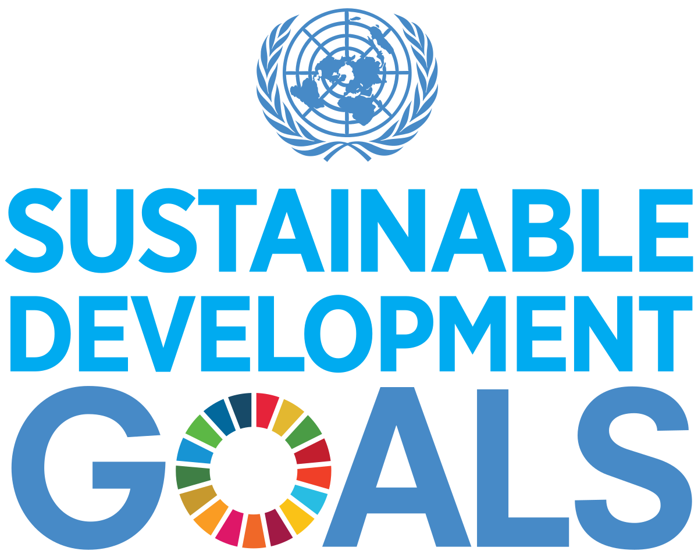
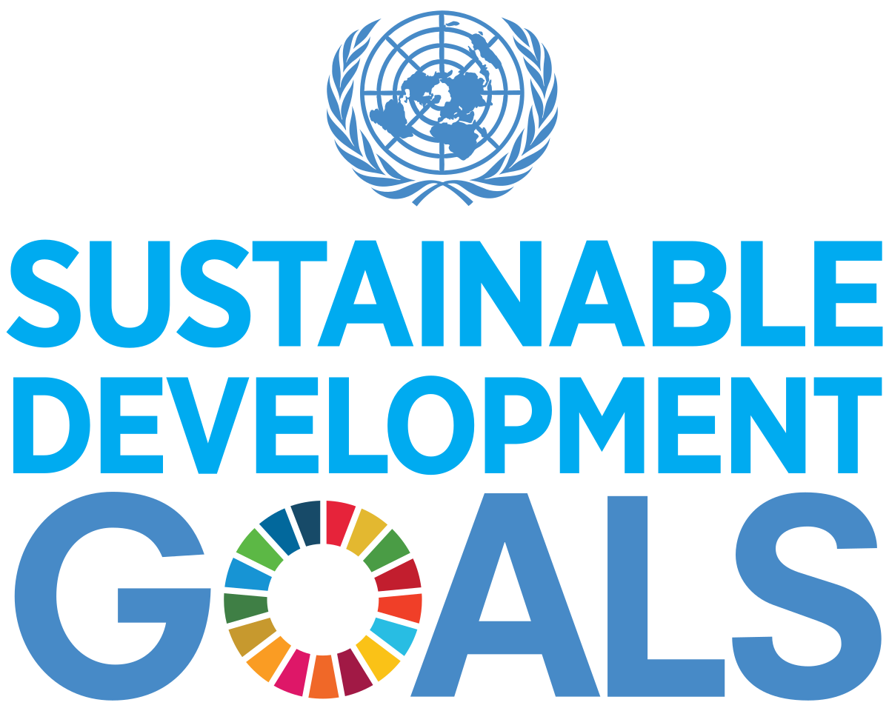
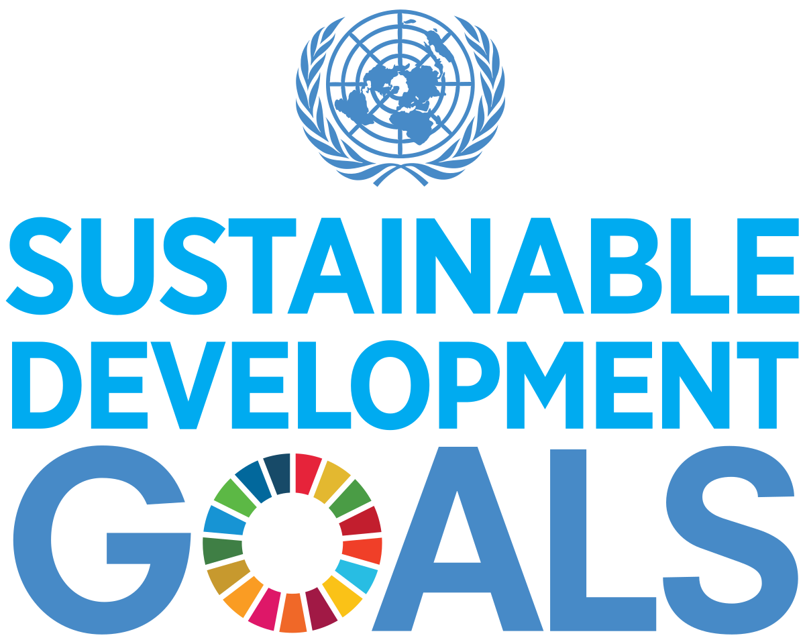
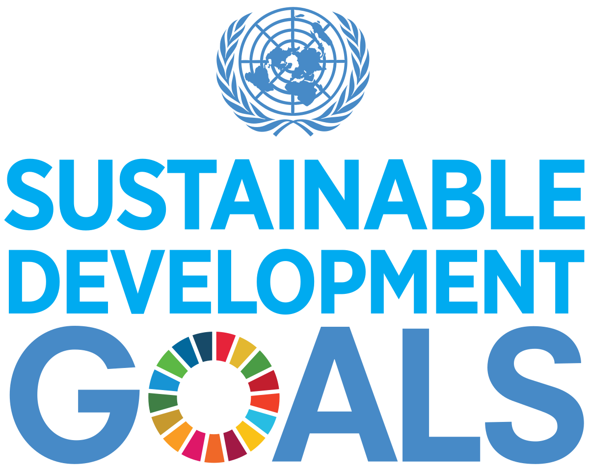

Community Vaccination Drive, 2024 — Health workers administered vaccines to children and families in remote areas, protecting the next generation.
HIV Awareness Campaign, 2024 — Volunteers provided free HIV testing, counseling, and information to reduce stigma.

Maternal Health Outreach, 2023 — Mobile clinics offered prenatal check-ups and education to support safe pregnancies.

Mental Health Workshop, 2025 — Programs promoted mental well-being through counseling, group support, and educational resources.
SDG 3, Good Health and Well-Being, aims to ensure healthy lives and promote well-being for all at all ages. Health is not only essential for individuals but also for families, communities, and sustainable development. Achieving this goal involves reducing maternal and child mortality, combating epidemics like HIV/AIDS and malaria, addressing non-communicable diseases, and strengthening mental health and well-being worldwide
The main targets of SDG 3 include ending preventable deaths of newborns and children under five, reducing maternal mortality, ending epidemics of HIV/AIDS, tuberculosis, malaria, and other communicable diseases, promoting mental health, and achieving universal health coverage. It also focuses on reducing deaths from hazardous chemicals and pollution, and ensuring access to affordable medicines and vaccines for all
HIV continues to be a global health challenge, affecting millions of people worldwide. Despite advances in treatment, access to prevention and care is still uneven, and stigma remains a barrier to testing and treatment. In 2024, there were approximately 1.3 million new infections and 630,000 AIDS-related deaths globally, showing the ongoing need for awareness, prevention, and treatment programs
Recent reports warn that global funding cuts are disrupting prevention and treatment services. According to UNAIDS, many community-led programs have been defunded, leaving vulnerable populations with reduced access to care — a setback that threatens to reverse decades of progress in fighting HIV/AIDS.

Mental health and other non-communicable diseases (NCDs) are increasingly recognized as critical components of global health. Conditions like depression, anxiety, and chronic illnesses affect billions of people and can undermine quality of life, productivity, and overall well-being. Addressing mental health is essential not just for individuals, but for strong communities and social stability.
While global efforts to integrate mental health into broader health strategies have grown, recent global health reports warn that progress is stalling: health systems under strain, along with disrupted preventive and support services, are making it harder to respond to mental health needs and NCDs — especially in vulnerable or underserved regions.
Ensuring child health — especially for infants and young children — is central to global health efforts. Vaccination protects children from preventable diseases and supports healthy growth and development. Under-vaccinated or unvaccinated children remain highly vulnerable to serious disease and death.

However, recent data from World Health Organization (WHO) and UNICEF show that although global immunization efforts continue, more than 14 million infants remained unvaccinated in 2024 (“zero-dose” children), and gaps in coverage remain especially serious in fragile and conflict-affected regions. These gaps raise renewed concern about potential outbreaks of preventable diseases worldwide.
Good health is not only about treating illness — prevention, education, and awareness are key. Health education programs that promote hygiene, nutrition, lifestyle awareness, vaccination, and disease prevention empower individuals and communities to take charge of their health and reduce risks early.
Recent global health statistics from WHO warn that many countries are falling behind in fundamental health coverage and preventive services. Disruptions — whether due to funding gaps, instability, or weakened health infrastructure — threaten to undermine earlier gains and increase vulnerability to both communicable and non-communicable diseases.
Global initiatives for SDG 3 involve governments, WHO, UNAIDS, and community organizations working together to strengthen health systems, expand access to care, and promote prevention and well-being for all. Programs focus on universal health coverage, affordable medicines and vaccines, maternal and child health, mental health support, and readiness for health emergencies. These efforts aim not only to save lives but also to build resilient healthcare systems capable of responding to old and emerging health challenges.
in 2024, a global HIV awareness and treatment program reached millions, reducing new infections and AIDS-related deaths significantly. These programs demonstrate the impact of coordinated efforts in promoting health and preventing disease (UNAIDS). Learn more here.
SDG 3 focuses on ensuring good health and well-being for everyone. Achieving it requires reducing maternal and child mortality, preventing epidemics, addressing non-communicable diseases, and ensuring access to healthcare and vaccines. Health education, prevention, and equitable care are central, as healthy populations contribute to sustainable societies (UN).